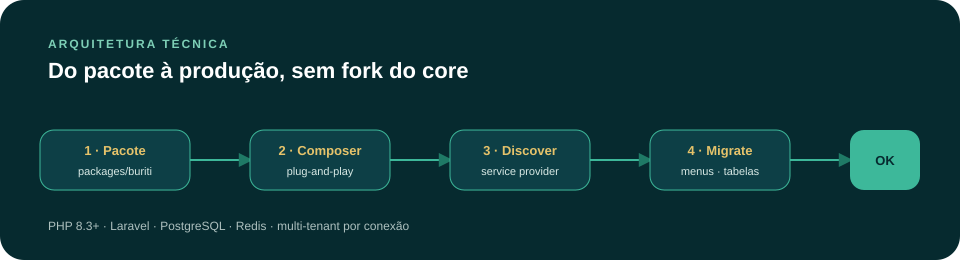
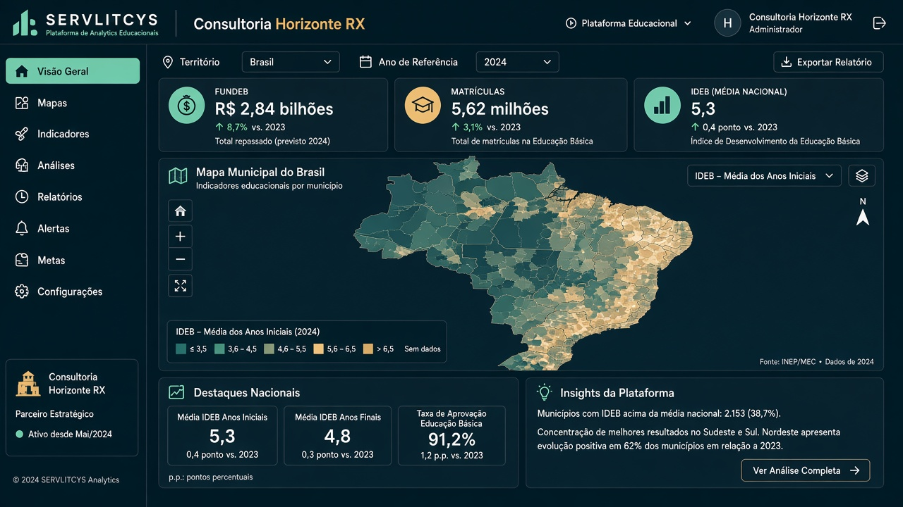
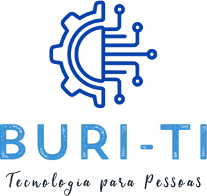

Cadastro único
Pessoa, aluno, matrícula e histórico numa base só — fim da planilha paralela.
Software Público Brasileiro · GPL v2
A gestão da escola pública em base única: matrícula, frequência, avaliação, Censo e extensões modernas — sem custo de licença e com soberania dos dados do município.
 Painel da secretaria
Painel da secretaria
Nascido em Itajaí/SC (2008) e mantido nacionalmente pela Portábilis, o i-Educar concentra a verdade cadastral da rede. A Buriti evolui o ecossistema com plugins, transporte, BI e integrações — sem abandonar o upstream.
Pessoa, aluno, matrícula e histórico numa base só — fim da planilha paralela.
Frequência, avaliação flexível, quadro de horários, servidores e documentos oficiais.
Exportação/importação alinhada ao layout do INEP, com validação antes do prazo.
Pré-matrícula digital com critérios públicos e lista de espera transparente.
Dados sob controle do município, código GPL v2 auditável e trilha de acesso.
PHP 8.3+, Laravel, PostgreSQL, Redis, filas e multi-tenant por conexão.
O núcleo SGE no centro; diário, fila, Censo, plugins e analytics orbitam a mesma base — sem duplicar aluno nem escola.


Recortes visuais da operação: gestão da secretaria, transporte com mapa, relatórios avançados e painel SERVLITCYS.


Pacotes satélite, identidade federal, biometria e inteligência territorial sobre o mesmo SGE.
Composer plug-and-play: evoluir módulos sem abandonar o upstream Portábilis.
PDF/Excel no dia a dia, menus temáticos e validação pública por QR Code.
Rotas, mapa, portal da família, ocupação por turno, viagens e conformidade.
OpenID Connect na autenticação do i-Educar, configurável pela interface.
Laravel Pulse empacotado: filas, queries, exceções e saúde da instalação.
SERVLITCYS cruza i-Educar com FUNDEB, Censo, SAEB e mapa Horizonte.
A Portábilis conduz a evolução do core, revisa contribuições da comunidade e mantém o i-Educar alinhado às redes públicas. Nasceu em 2009 com a tese de sustentar o Software Público de forma aberta e duradoura.
ieducar.org · github.com/portabilis/i-educar · tutoriais
PDFs de referência para implantação, visão do ecossistema e apresentação gerencial.
i-Educar + i-Diário + integrações para redes municipais.
Baixar PDFRoteiro completo de implantação do ecossistema.
Baixar PDFPanorama para secretarias: módulos, BI e formação.
Baixar PDFTambém: guia técnico dos pacotes (Markdown) · ieducar.org/primeiros-passos
O SGE ganha valor quando diário, censo, BI e políticas federais compartilham o mesmo aluno.
Diário de classe, chamada, notas e planejamento do professor.
Layouts oficiais de matrícula inicial e identificação única.
Filas, vagas e transparência no acesso à escola pública.
Identidade federal, biometria facial e Gestão Presente (MEC).
Pacotes plug-and-play para i-Educar 2.10–2.12, mantidos pela equipe Buriti / Serventec.
PDF/Excel sem Java no dia a dia, menus temáticos e QR Code. Espelho: i-Educar/advreport.
Rotas, mapa, frota, portal da família, solicitações, viagens e gastos.
OpenID Connect na tela de login, configurável pela administração.
Helpdesk com protocolo, setores, prioridades, notificações e KPIs.
Exportação e consistência para o SGP (planilhas / API CMDEB).
Menu lateral recolhível e tema claro/escuro/sistema.
BNCC, calendário, perfis, turmas e tipos de boletim para acelerar implantação.
Plataforma Laravel de dados educacionais por município: consultoria, RX, Horizonte GIS e ligação direta às bases i-Educar.
Integra i-Educar com FUNDEB, Censo INEP e SAEB. Painéis de matrículas, inclusão, desempenho e finanças; visão RX de cadastro/Censo; mapa Horizonte para priorizar ações.
Código:
JaderGabriel/serventec-servlitcys
Ambiente:
analise.serventecassessoria.com.br

Organização e site i-educar.github.io sob curadoria da equipe Buriti, em cooperação com a LibreCode.

Núcleo técnico dos plugins, transporte v2, relatórios avançados, integrações municipais e curadoria desta página na organização GitHub i-Educar.
Organização i-Educar
Cooperativa de software livre — hospedagem soberana, suporte e customização, com i-Educar no portfólio de soluções livres.
librecode.coop